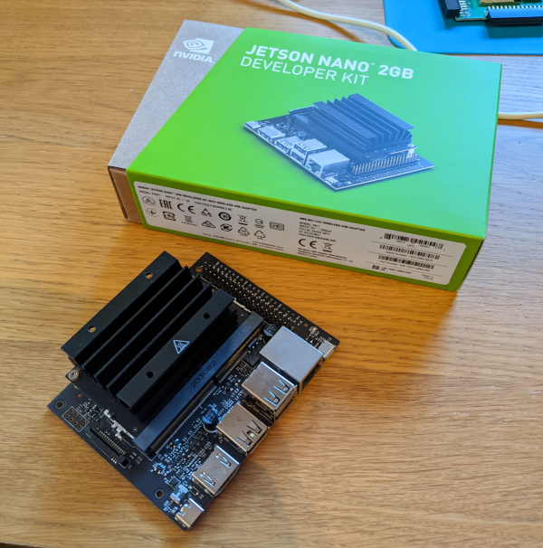
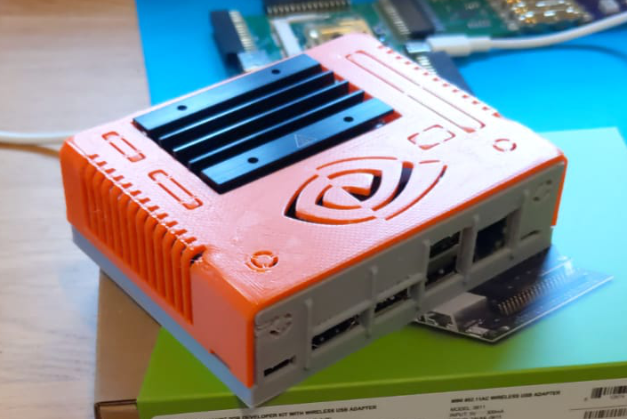
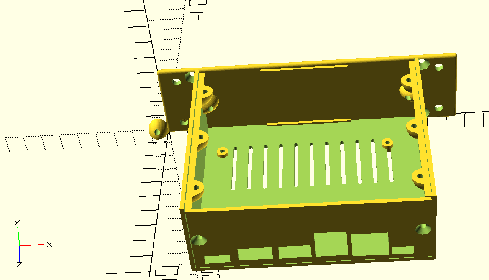
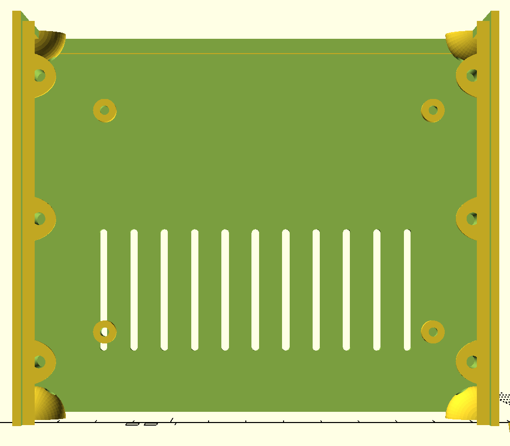
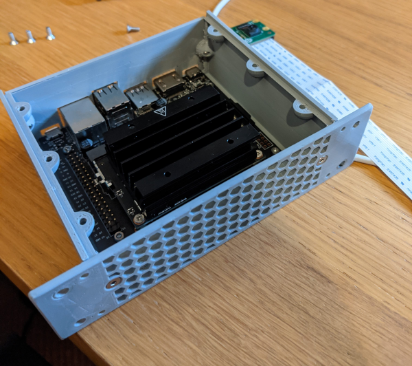
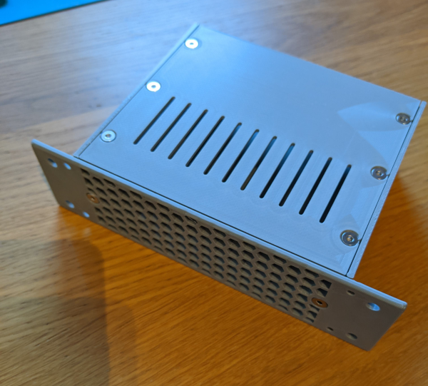

Before Christmas I picked up a 2GB Jetson Nano to have a play with, I think these devices are interesting with the combination of an ARM processor and GPU. There have been devices like this before, and we even have a spare one at work in our Makerspace but I never found time to have an experiment with one. Now with extra time on my hands over winter with the joy of home working, and the recently released 2GB version for about £55 meant it was time to have an experiment.

Once I had got to grip with the Jetson Nano, and completed NVidia's Getting Started With AI on Jetson Nano, I started thinking about 3D printing a case, so that it wasn't another devboard lost down the back of my desk in an anti-static bag. At first I found a lot of design's on thingiverse, but many of these are targeted at the 4Gb version, which has more ports and uses a Dc jack to power it. I did find an one on thingiverse which I printed at first, although I wasn't completely happy with this as a long term solution.

I decided to take a look at making 3D printing a case that would fit in with the Six Inch Rack Mount system. As I already have an number of raspberry Pi's in this mini rack mount based system. My plan was that by modifying an existing OpenSCAD model so that I could fit The Jetson Nano in, and that put the correct ports so I would have suitable holes in the back panel. The Jetson Nano, while being bigger than the Raspberry PI 2's that are housed within the same front print, the Jetson Nano fits easily within the same space, except in terms of height due to the large heat sink. To allow the Jetson to fit in the rack mount cabinets I had to use 3U of height (each U is 1.44cm), instead of the 2U in the raspberry Pi cases.

Using the Six Inch Library makes building up the components, using measurements taken from the Jetson Nano, very simple. Passing values for the size of the hole into a function that then builds the part which can then be exported as an STL, and then on to be 3D printed.
The square holes for each of ports of the ports on the Jetson Nano is described as a point on the back of the case by the first two coordinates, then followed by the X and Y coordinates representing the size of the square hole to be cut out of the back of the case. The other key values as the height of the side screws, which mounts the back panel to the main cabinet, then the number of units or height which in this case is 3 for 3U.
include<sixinch_library.scad>
square_hole = [[92.5 ,3, 10, 5] , [74 ,3, 17, 15] , [57 ,4, 15, 16] , [40,4,15,8], [21,4,16,8], [5 ,3, 12, 5] ];
round_hole = [];
screw_top = [];//mm
screw_bottom = [];//mm
screw_side = [1.5];
depth = 98;
units = 3;
back_plate(units,depth,screw_top,screw_bottom,screw_side,square_hole,round_hole);
Another key component is the placement of the screw holes in the main cabinet, for mounting the Jetson Board using the mounting screws, the positions are measured from the board and then mapped onto the round peg parts. I used the same M2.5 screws I use when mounting my raspberry Pi's in there Rack Mount, so the peg dimensions were taken from that design in the Six Inch Library.
include<sixinch_library.scad>
w=95;
h=98-17-2;
screw_bottom_front = [];
screw_side_front = [1.5];
round_peg = [[w,h,6,2.4,4],
[w-86,h,6,2.4,4],
[w-86,h-58,6,2.4,4],
[w,h-58,6,2.4,4]];
depth = 98;
units = 3;
cabinet(depth,units,screw_bottom_front,round_peg,screw_side_front);

Getting these measurements alright took a couple of attempts, getting the tolerances correct so that the heights all lined up with the ports, as leaving enough room to actually plug all the cables in were all issues I had, but thankfully almost all were on the back panel, which is quick to produce on the 3D printer.
The large Heat sink also give a possible indication of heat being an issue, this is already a bit of an issue in the Raspberry Pi Cases, but with the large heatsink, I decided to make use of a mesh front to the case. The mesh front was also available on thingevers, and allows a bit more airflow to the heatsink.

The mesh based panel is taken directly from the another github repositry which contains a number of mesh grids. I have made use of the 3U mesh grid, but I needed to modify the positions of the screws, to line up with where the screws are placed on the main cabinet.

With the case all completed, all that is left to do is add some handles when i get some black filament, taking them from the library and start getting a rack together like my Raspberry Pi Cluster. Once its all together I plan to have a look at getting started with CUPY and cuSignal, and see what is possible with these Jetson Nano Boards.